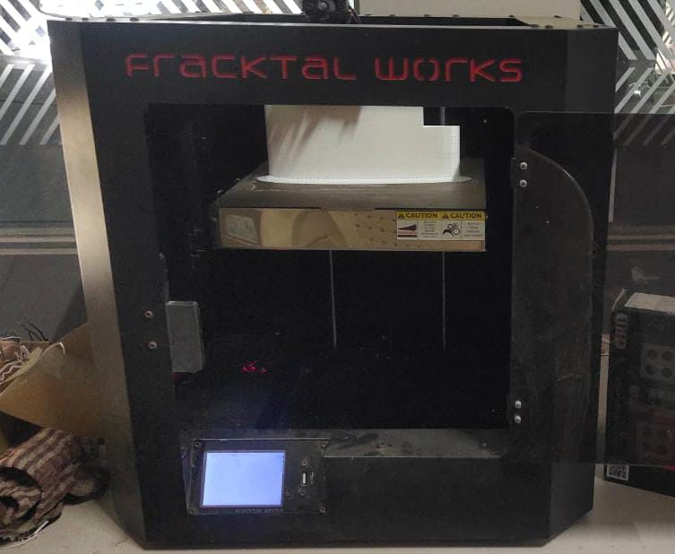
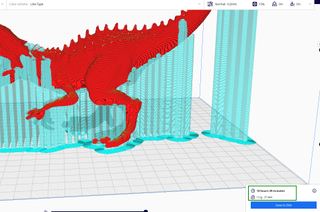

Documentation Of Module 4
3D printing
-
The Fourth Module Of Our Fablab Was of
3D printing Which Includes Understanding Of printing Softwares LikeUltimakerCura And3D Printing Machine . -
Introduction :
3D printing is a revolutionary technology that allows for the creation of three-dimensional objects from digital models. This process, also known as additive manufacturing, builds objects layer by layer, unlike traditional subtractive manufacturing methods that remove material to create an object. 3D printing has a wide range of applications across various industries, including manufacturing, healthcare, aerospace, and education. It enables rapid prototyping, customization, and complex geometries that would be difficult or impossible to achieve with traditional manufacturing methods. -
Models for Printing:
To prepare a 3D model for printing, it needs to be exported to a format that is compatible with 3D printing software, such as .stl (stereolithography) file format. Once the model is in .stl format, it can be imported into slicing software like UltimakerCura. Slicing software prepares the model for printing by generating a toolpath for the 3D printer to follow, slicing the model into layers and calculating the necessary parameters for printing. -
Supports in 3D Printing:
Support structures in 3D printing provide temporary scaffolding to prevent sagging or collapsing of overhanging parts during printing. Generated automatically by slicing software, they're customizable in density and pattern. Once printing is done, supports are removed by hand or tools. Types include simple vertical columns, tree-like structures, and grid supports. Material choice affects support needs; some, like PLA, may require more support due to warping tendencies. Manual support placement in modeling software offers advanced users greater control. Ultimately, support structures enable the fabrication of complex designs with accuracy and integrity.

3D Printing
